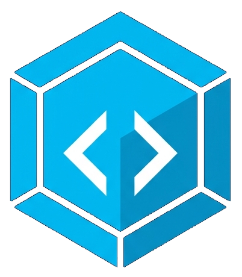

Bloqcode Play
Mini Apps, Tests & Juegos
Soluciones simples, hechas con pequeños bloques de código, para desconectar y reflexionar en un mundo en caos.
🧭
Test Interactivo
Medidor de Emociones
Explora tu estado emocional, identifica qué sientes y encuentra equilibrio a través de este test reflexivo.
Iniciar test
🎮
Juego Clásico
El Ahorcado
Pon a prueba tu vocabulario, adivina las palabras letra por letra y rescata al personaje antes de agotar tus intentos.
Jugar ahora
🚀 Nuevos minijuegos y tests en desarrollo. ¡Pronto más bloques interactivos!